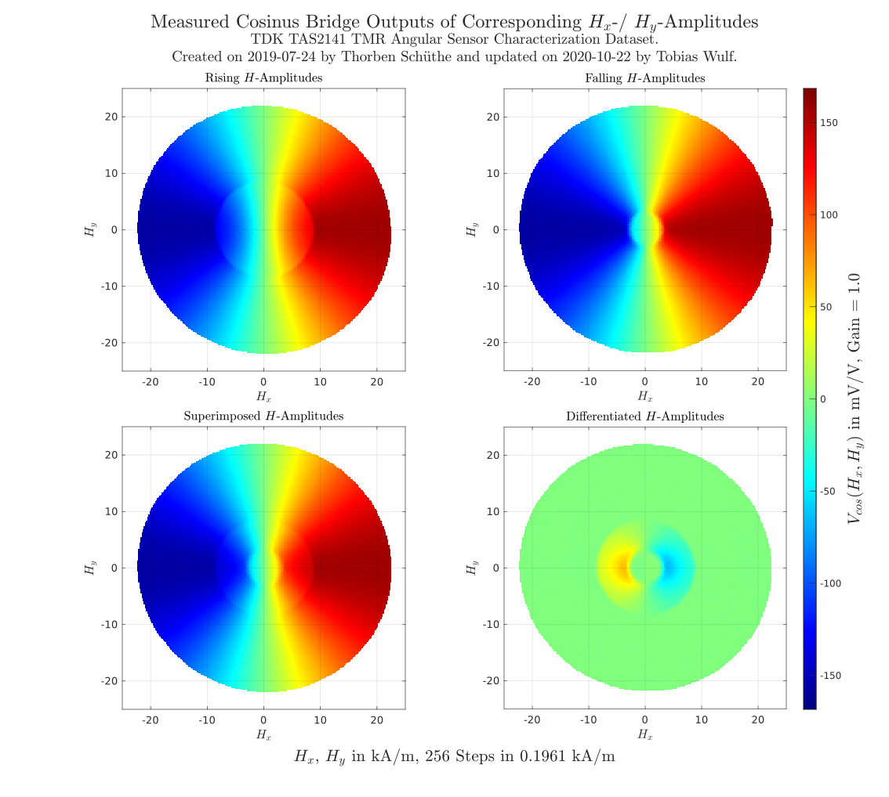
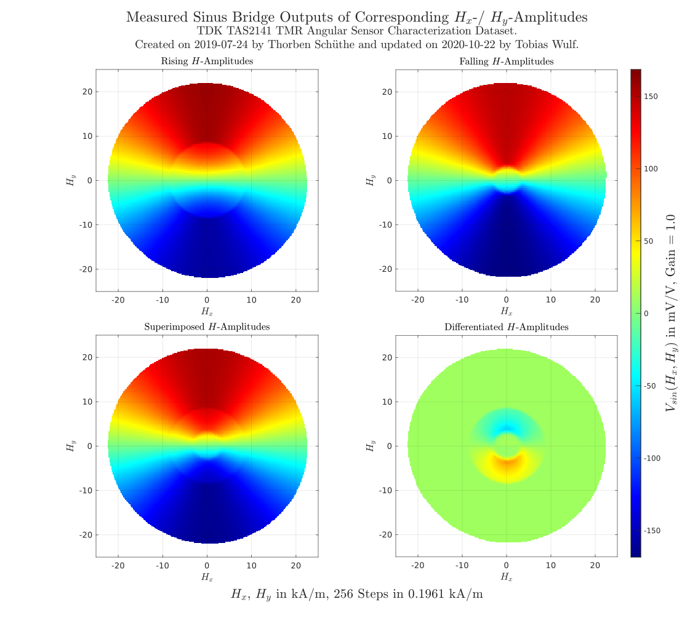

TDK TAS2141 Characterization
TDK characterization as base of the sensor array simulation was done before the dataset is just modified in its structure and not in its values. An additional info struct is added which contains information about how the dataset was aquirred and a data struct which contains the magnetic field resolution and the cosinus and sinus bridge images for variable Hx and Hy fieldstrengths. The raw dataset was aquirred after the method Thorben Schüthe describe in his IEEE paper for two-dimensional characterization of TMR angular sensors. The sensor characterized for both bridges a cosinus and sinus bridge. The bridges have a phisically phase shift of 90° so the sensor as able to reference a superimposed magnetic field flud in x- and y-direction. The field was generated by an cross coil setup.
Contents
See Also
Magnetic Stimulus
The right stimulus is the keynote for characterization records. It needs to have the abillity record slow enough for quasi static recordings but is not allowed to be real static so the magnetic field is not interrupted during the recording. Therefore slow sinoid carrier functions with even slower amplitude modulation is choosen to provide a quasi static stimulus.
The carrier function for the Hx-field stimulus is related to the cosinus bridge and so:

Due to the physically phase shift the Hy-field stimulus is related to sinus:

Both carrier runs with same carrier frequency:

so they are executed with the phase vector over time:

The carrier functions are triangle modulated to generate rising and falling amplituded. The modulation frequency is set to:

Which generates a stimulus with 320 periods where 160 periods feeds a rising and falling record each multiplied with maximum fieldstrength amplitude:


So the Hx- and Hy-field stimulus is described by:


The stimulus amplitude depending on the phase in polar coordinates can be displayed for both parts by:

Where a rising spiral runs from center outwards for:

And a falling spiral of amplitudes from outwards to center for:


Cosinuns Bridge Output
The record characterization raw data are one dimensional time discrete vecotrs. To fieldstrength images like down below the recorded data must be referenced backwords to driven stimulus of Hx- and Hy-direction. But at first the image size of must be determined. Here fix size is set to 256px for each direction. So it spans a vector for Hx- and Hy-direction from minimum -25kA/m to maximum 25kA/m in 256 steps with a resolution of 0.1961kA/m. So it results into a 256x256 image. Now it runs for each point on the Hx- and Hy-axes and get the record index of the stimulus as backreference to the recorded bridge signal and sets the pixel. That runs for the rising modulation amplitude and falling amplitude until every pixel is hit and ended up into a dimensional function image as:
![$$V_{cos}(H_x, H_y) = [mV/V]$$](TDK_TAS2141_Characterization_eq17692096745926433086.png)
The information of the image is build up in row. Reference Hx for constant Hy in each row. The method is also comparable to a historgram of Hx matches in the recorded sensor signal for one constant Hy and so on next historgram append on the next row for the next Hy.

Sinus Bridge Output
The sinus characterization field is build up similar to the cosinus images but the information lays now in the columns so the data is collected in each column for a constant Hx and variable Hy:
![$$V_{sin}(H_x, H_y) = [mV/V]$$](TDK_TAS2141_Characterization_eq14360716227051067661.png)

Dataset Structure
Info:
The dataset is parted in two main structs. The first one is filled with meta data. So it represents the file header. The struct is called Info and contains information about how the dataset is aquirred. So the stimulus is reconstructable from that meta data.
- Created - string, contains dataset creation date
- Creator - string, contains dataset creator
- Edited - string, contains last time edited date
- Editor - string, contains last time editor
- Senor - string, sensor identification name e.g. TAS2141
- SensorType - string, kind of sensor e.g. Angular
- SensorTechnology - string, bridge technology e.g. AMR, GMR, TMR
- SensorManufacturer - string, producer or supplier e.g. NXP, TDK
- MagneticField - struct, contains further information about Hx and Hy
- SensorOutput - struct, contains information about sensor produced output and gathered image information
- Units - struct, contains information about used si units in dataset
- MagneticField:
- Modulation - string, contains modulation equivalent Matlab function
- ModulationFrequency - double, contains frequeny of modulation in Hz
- CarrierFrequency - double, carrier frequency for both Hx and Hy carrier in Hz
- MaxAmplitude - double, maximum Hx and Hy field amplitude in kA/m
- MinAmplitude - double, minimum Hx and Hy field amplitude in kA/m
- Steps - double, Hx- and Hy-field steps to build characterization images
- Resolution - double, resolution of one step in kA/m
- CarrierHx - string, contains Hx carrier equivalent Matlab function
- CarrierHy - string, contains Hy carrier equivalent Matlab function
- SensorOutput:
- CosinusBridge - struct, contains further information about sensor cosinus bridge outpus
- SinusBridge - struct, contains further information about sensor sinus bridge outputs
- CosinusBridge/ SinusBridge:
- xDimension - double, image size in x-direction
- yDimension - double, image size in y-direction
- xDirection - string, x-axis label
- yDirection - string, y-axis label
- Orientation - string, orientation of varying data, row or column
- Determination - cell, images in data {"Rise", "Fall", "All", "Diff"}
- Units:
- MagneticFieldStrength - string, kA/m
- Frequency - string, Hz
- SensorOutputVoltage - string, mV/V
Data:
The second struct contains the preporcessed characteriazation data of the TDK TAS2141 TMR angular Sensor. It is divided into two main structs one for the magnetic field reference points of the characterization images and one for the characteriazation sensor output images.
- MagneticField - struct, contain Hx- and Hy-field vectors which are the resolution references to each pixel in the characterization images of the sensors preprocessed bridge outputs
- SensorOutput - struct, contains structs for cosinus and sinus bridge outputs preprocessed in images of size of 256x256 pixels where each pixels references a bridge output in mV to a certain Hx- and Hy-fieldstrength amplitdue
- MagneticField:
- hx - array, Hx field axis of characteriazation images column vector of 1x256 double values from -25 kA/m to 25 kA/m with a resolution of 0.1961 kA/m
- hy - array, Hy field axis of characteriazation images column vector of 1x256 double values from -25 kA/m to 25 kA/m with a resolution of 0.1961 kA/m
- SensorOutput:
- CosinusBridge - struct, contains preprocessed characterization results of the sensors cosinus bridge outputs
- SinusBridge - struct, contains preprocessed characterization results of the sensors sinus bridge outputs
- CosinusBridge:
- Rise - array, double array of size 256x256 which references the cosinus bridge outputs for rising modulated stimulus amplitude to each cross reference of vectors MagneticField.hx and MagneticField.hy
- Fall - array, double array of size 256x256 which references the cosinus bridge outputs for falling modulated stimulus amplitude to each cross reference of vectors MagneticField.hx and MagneticField.hy
- All - array, double array of size 256x256 superimposed image of Rise and Fall
- Diff - array, double array of size 256x256 differentiated image of Rise and Fall
- SinusBridge:
- Rise - array, double array of size 256x256 which references the sinus bridge outputs for rising modulated stimulus amplitude to each cross reference of vectors MagneticField.hx and MagneticField.hy
- Fall - array, double array of size 256x256 which references the sinus bridge outputs for falling modulated stimulus amplitude to each cross reference of vectors MagneticField.hx and MagneticField.hy
- All - array, double array of size 256x256 superimposed image of Rise and Fall
- Diff - array, double array of size 256x256 differentiated image of Rise and Fall
The edited raw dataset provided from Thorben Schüthe is save with Matlabs build-in save function in a certain way to perform partial loads from the dataset.
save('data/TDK_TAS2141_Characterization_2019-07-24.mat', 'Info', 'Data', '-v7.3', '-nocompression')
Created on October 27. 2020 Tobias Wulf. Copyright Tobias Wulf 2020.